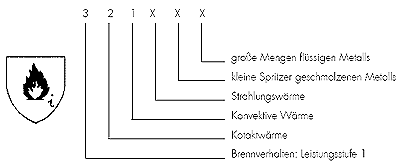

4.5 Kennzeichnung
4.5.1 Allgemeines
Schutzhandschuhe sind nach Norm mindestens mit folgenden Angaben deutlich erkennbar und dauerhaft gekennzeichnet:
Zusätzlich muss das CE-Zeichen angebracht sein.
Die CE-Kennzeichnung besteht aus dem Kurzzeichen „CE“ (CE = Communauté européenne), für die Kategorie III, mit dem Zusatz der Kennnummer der benannten Stelle, die die Qualitätsüberwachung durchführt.
Für die Auswahl von Schutzhandschuhen ist die Herstellerinformation des Lieferanten über Verwendung, Schutzfunktion und Haltbarkeit der Schutzhandschuhe anzufordern. Hierzu zählen die Gewährleistung, dass die Anforderungen der EG-Richtlinie bzw. der zutreffenden harmonisierten EN-Normen durch den Lieferanten erfüllt werden. Dies erfolgt durch die "CE"-Kennzeichnung und Konformitätserklärung.
Umfang und Grenzen der Schutzfunktion von Schutzhandschuhen sollen dem Anwender verdeutlichen und sicherstellen, dass der jeweils geeignete Schutzhandschuh für die ermittelte Beanspruchung gewählt wird.
4.5.2 Zusatzkennzeichnung
4.5.2.1 Zusätzlich zu Abschnitt 4.5.1 ist nach Norm jeder Schutzhandschuh mit der Hand-schuhbezeichnung, z.B. dem handelsüblichen Artikelnamen oder -code, der dem Anwender die eindeutige Identifizierung des Produktes innerhalb des Handschuhsortimentes eines bestimmten Herstellers bzw. dessen bevollmächtigten Repräsentanten ermöglicht, gekennzeichnet. Die Kennzeichnung muss deutlich erkennbar und über die vorgesehene Gebrauchszeit des Handschuhes lesbar angebracht sein. Kenn-zeichnungen, die zu Verwechslungen mit den oben genannten Kennzeichen führen können, sind nicht zulässig.
Die Kennzeichnung kann auch auf der kleinsten Verpackungseinheit erfolgen, falls die Kennzeichnung auf dem Handschuh den Schutzgrad herabsetzt, die Schutzwirkung behindert und unvereinbar mit dem Einsatzzweck ist, z. B. Handschuhe für Reinräume und Lebensmittelindustrie.
4.5.2.2 Auf Handschuhen von komplexer Konstruktion, die von einem anerkannten Institut geprüft wurden, sind entsprechend dem durchgeführten Test Piktogramme zusammen mit den Leistungsstufen aufgedruckt.
Siehe auch letzter Absatz der Vorbemerkung.
4.5.3 Piktogramme
Piktogramme müssen auf dem Handschuh oder auf der kleinsten Verpackung angegeben sein, damit sofort erkennbar ist, gegen welche Einwirkung der Schutzhandschuh schützen soll. Auf dem Piktogramm muss auch die Leistungsstufe angegeben sein.
Beispiel für ein Piktogramm entsprechend DIN EN 407 "Schutzhandschuhe gegen thermische Risiken (Hitze und/oder Feuer)."

Die Kennzeichnung "X" anstelle einer Zahl bedeutet, dass der Handschuh nicht für die Verwendung, die von dieser Prüfung abgedeckt ist, vorgesehen ist.
Piktogramme siehe Anhang 5.